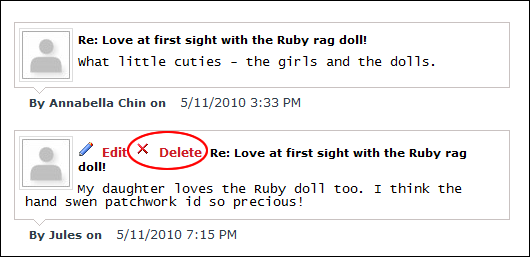

Deleting Your Comments
How to delete comments you added to a blog entry on the Blog module. Note: You can only delete your comments if you were logged in when adding them and if you are currently logged in.
- Locate the required blog entry. See "Viewing Blog Entries for a Month", See "Viewing Blog Entries for a Single Date", or See "Viewing Recent Entries for a Single Blog".
- Click the
 Comments link to the bottom left corner of the blog entry. This displays the post in full with all related comments displayed below.
Comments link to the bottom left corner of the blog entry. This displays the post in full with all related comments displayed below.
- Click the Delete
 button or the Delete link.
button or the Delete link.

Editing Your Comments